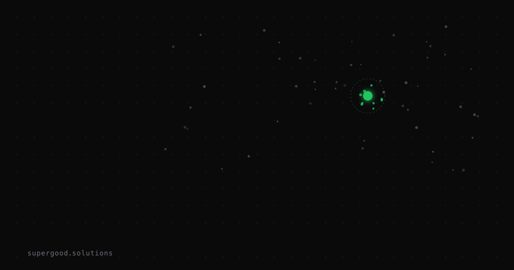

Long Context Windows Haven't Made RAG Obsolete
TL;DR: Models now ship with 10-million-token windows, and the "just put everything in context" crowd declared RAG dead — but 60% of production LLM apps still use retrieval, and that number is growing. The choice between long context and RAG is now an architectural decision, not a capability gap.
Key Insight
The narrative ran like this: once context windows got big enough, you could skip retrieval infrastructure entirely. Stuff the whole knowledge base into a single prompt and let the model do the work. Simpler pipeline, fewer moving parts, done.
That prediction has aged badly. RAG framework usage grew 400% between 2024 and 2026. Teams didn't abandon retrieval. They doubled down on it, because large windows introduced new failure modes nobody was talking about when they made the "RAG is dead" call.
Context size and retrieval quality solve different problems. A 10-million-token window doesn't fix the fact that your model attends poorly to content buried in the middle. And it absolutely doesn't fix your access control layer, your cost model, or your latency budget.
Why Teams Miss This
The mistake is treating this as a capability question. "Can the model technically hold my entire corpus in context?" Yes, often. But production systems fail on economics, not capability.
The cost gap is brutal. Feeding a 400,000-token corpus at $10 per million tokens costs roughly $4.00 per query. The same retrieval pipeline, pulling only the top-k relevant chunks, runs around $0.06 per query on the same rate. That's a 66x difference per query. At scale, that's not an engineering preference, it's a business model decision.
The "lost in the middle" problem doesn't go away. Stanford researchers documented this in arXiv 2307.03172: transformer models attend most strongly to the very beginning and end of context. When relevant content lands in the middle of a long window, accuracy drops 30% or more. A 10-million-token window doesn't fix this. It makes the middle larger.
Latency predictability matters in production. Long-context calls with massive prompts have highly variable inference times. RAG queries are fast and bounded. If you're running a synchronous user-facing feature, that variance shows up in your p99s.
Access control is harder with full-corpus stuffing. RAG pipelines filter at retrieval time based on user permissions before anything hits the model. Full-context approaches require you to trust that the model won't surface content a user isn't supposed to see. Models don't reliably enforce row-level data security.
How to Actually Do It
The 2026 production pattern combines both: retrieval into long context. Use retrieval to narrow down a relevant subset, then use the context window to reason across it deeply.
Decision framework:
- Corpus size under ~50 pages and queries are dense, multi-hop? Long context wins. Reasoning across a full legal contract or technical spec benefits from the model seeing the entire document at once.
2. Corpus is large, access-controlled, or cost-sensitive? RAG wins. Retrieve top-k chunks, pass to the model with a focused prompt.
3. Query requires synthesis across many documents? Hybrid. Retrieve broadly, then use a longer context window to synthesize across the retrieved set.
Quick access control check before you design:
# If your answer to any of these is "yes," you need RAG
has_per_user_permissions = True # different users see different docs?
corpus_size_tokens = 2_000_000 # > a few hundred thousand tokens?
daily_query_volume = 50_000 # high volume = cost explodes with full context
latency_sla_ms = 2000 # tight SLA = long prompts are riskyModel behavior isn't uniform. A 2025 evaluation (arXiv 2501.01880) showed that GPT-4o improves at RAG performance even at 128K-token inputs, while models like Qwen2.5 and GLM-4-Plus degrade past 32K tokens. Don't assume your long-context model handles long context well. Benchmark it on your corpus.
What We've Learned
Run the cost math before you run the benchmark. Teams that kill their RAG pipeline because "we have a million-token window now" almost always rebuild it six months later when the inference bill lands or the access control audit comes back flagged.
The architectural question has shifted from "do we need RAG?" to "where does retrieval end and context reasoning begin?" That's the better question to spend a meeting on before you rebuild your pipeline.
Sources
- RAG vs long context: what the 2026 data shows — Wire Blog; key benchmarks on cost and accuracy gaps
- Long context vs RAG 2026: cost and latency guide — eCorpIT; per-token cost modeling and framework data
- Lost in the Middle: How Language Models Use Long Contexts — Stanford / arXiv 2307.03172; documents the mid-window accuracy drop
- RAG vs Long Context 2026 production evaluation — arXiv 2501.01880; per-model benchmarks across QA datasets
- RAG vs long context debate roundup — ByteIota; sourced the 400% RAG growth stat
Have a specific workflow in mind?
Bring it to a Quick Scan — a live working session where we'll tell you honestly whether it should be an agent, a workflow, or left alone, before you spend a dollar building it. You get 3 prioritized recommendations on the call, a one-page summary after, and the $500 credited toward any engagement within 30 days.
Get new posts + practical agent-ops notes
One email when something new goes up. No nurture sequence, no spam — unsubscribe whenever you want.